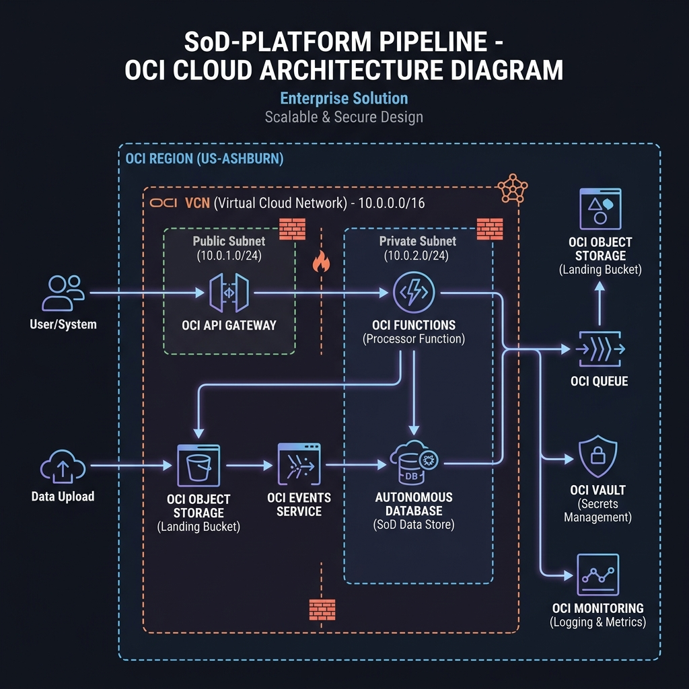
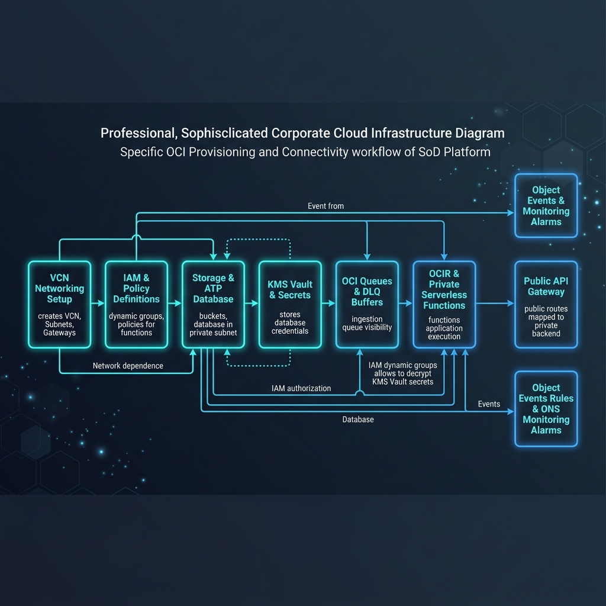
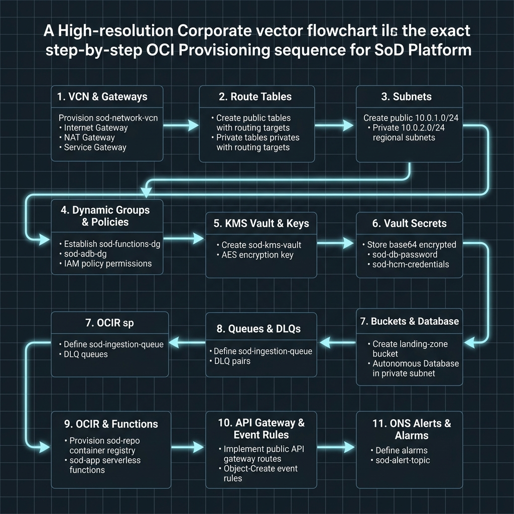

Reference Manual Overview
SoD-Platform OCI Architecture Blueprints
Interactive multi-page reference handbook detailing all system components, database ingestion modules, and assessment engines.
OCI Cloud Architecture Diagram
This layout displays the routing topologies, network boundaries, serverless application workers, storage landing zones, database, and monitoring configurations in the OCI compartment environment:

OCI Setup Provisioning & Connection Workflow
This flowchart displays how each setup step connects and depends on the other phases during OCI resource provisioning:

OCI Detailed Step-by-Step Provisioning Sequence
This sequence diagram displays the exact logical execution order and resource dependencies for provisioning all 11 phases in the OCI Console:

Back to Main Architecture Portal
Return to the main Segregation of Duties Assessment Platform dashboard portal page.